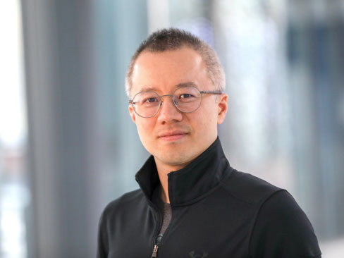
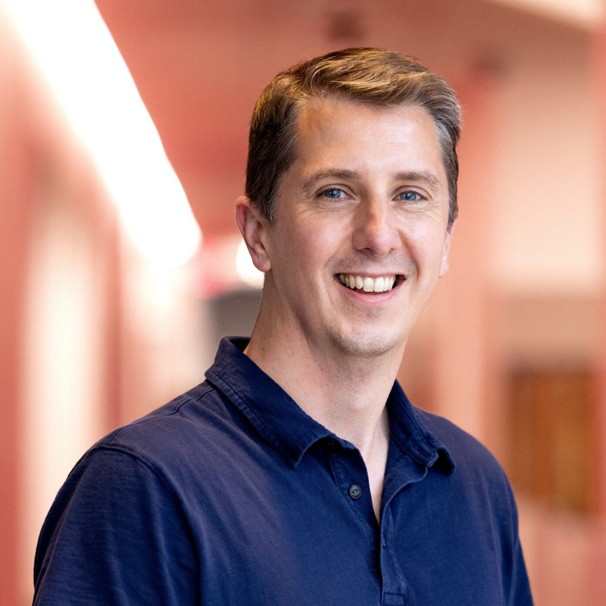
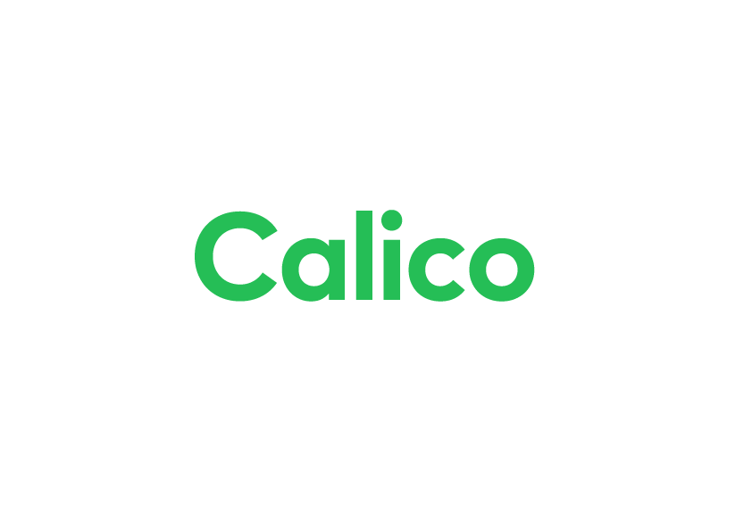

NeurIPS 2026 Workshop · Sydney, Australia
AI for Drug Discovery:
Bridging the Translation Gap
From benchmarks to prospective validation: robust, trustworthy, and translatable AI for real-world drug discovery.
About the Workshop
Artificial intelligence is rapidly reshaping drug discovery, with advances in deep learning, foundation models, generative modeling, structure prediction, and scientific agents showing strong potential across molecular property prediction, ligand and protein design, biomolecular interaction modeling, and experimental prioritization. Yet a substantial translation gap remains between computational success and real-world impact: strong performance on static, curated benchmarks does not necessarily persist under prospective experiments, new targets, new chemical series, assay shifts, or operational constraints.
This workshop brings the NeurIPS community together around this challenge — connecting machine learning researchers with computational chemists, structural biologists, experimental scientists, and industry practitioners to define what it means for AI in drug discovery to be not only accurate on benchmarks, but reliable, interpretable, experimentally actionable, and ultimately translatable to real therapeutic development.
Call for Papers
We invite submissions of original research, recently published work in scientific journals, and work in progress on AI for drug discovery, including but not limited to the following topics.
Scope & Topics
- From Benchmarks to Closed-Loop Translation — realistic benchmark design, external and prospective validation, retrospective–prospective discrepancies, negative and inconclusive results, failure analysis, evidence standards, reproducibility, and integration into design–make–test–learn workflows.
- Learning under Scarce, Biased, and Shifting Data — few-shot, zero-shot, transfer, active, and physics-informed learning; noisy or censored assays; missing modalities; cross-laboratory and cross-target distribution shift; adaptation from public datasets to real discovery campaigns.
- Scientific Reasoning and AI Co-Scientists — grounded hypothesis generation, experiment planning, multimodal reasoning, tool use, provenance, verification, failure recovery, and prospective evaluation of long-horizon scientific workflows.
- Trustworthy and Decision-Aware AI — uncertainty quantification, calibration, conformal and selective prediction, out-of-distribution detection, causal and mechanistic interpretation, abstention, decision-aware metrics.
- Multi-Objective and Resource-Constrained Discovery — cost-aware optimization and experimental value of information under conflicting objectives such as potency, selectivity, toxicity, synthesizability, pharmacokinetics, developability, and limited wet-lab budgets.
Submission Instructions
We welcome full papers (up to 5 pages) presenting complete research, as well as short papers (up to 2 pages) presenting preliminary results, well-supported perspectives on important issues relevant to the workshop, or promising new research directions. Short papers are not expected to include complete experimental results but should clearly articulate their motivation, key insights, and potential impact. Page limits exclude references and appendices. All submissions will undergo double-blind review through OpenReview.
Please use the NeurIPS 2026 LaTeX template; the NeurIPS checklist is not required. Please change the template footnote to “Submitted to in the AI for Drug Discovery workshop (NeurIPS 2026).”
This workshop is non-archival and does not publish proceedings.
Contributed talks and Best Paper Awards will be selected based on review scores and recommendations from the reviewers, followed by discussion among the workshop chairs.
Important Dates
| Call for papers | 15 July 2026 |
| Submission deadline | |
| Reviews due | 23 September 2026 |
| Meta-review | 27 September 2026 |
| Acceptance notification | 29 September 2026 |
| Camera-ready materials | 29 October 2026 |
All deadlines are 11:59 PM AoE (Anywhere on Earth), tentative pending final NeurIPS scheduling.
Schedule
Tentative one-day program (~8.5 hours), subject to change.
| Time | Session |
|---|---|
| 9:00–9:10 | Opening remarks |
| 9:10–9:40 | Invited talk 1 |
| 9:40–10:10 | Invited talk 2 |
| 10:10–10:20 | Coffee break |
| 10:20–11:20 | Poster session 1 |
| 11:20–11:50 | Contributed talks 1–2 |
| 11:50–12:20 | Invited talk 3 |
| 12:20–13:20 | Lunch break |
| 13:20–13:50 | Invited talk 4 |
| 13:50–14:20 | Invited talk 5 |
| 14:20–14:30 | Coffee break |
| 14:30–15:30 | Poster session 2 |
| 15:30–16:30 | Industry–academia panel & failure-analysis discussion |
| 16:30–17:00 | Contributed talks 3–4 |
| 17:00–17:15 | Quickfire presentations (3 talks) |
| 17:15–17:25 | Best paper award & closing remarks |
Invited Speakers & Panelists

Le Song
GenBio AI & MBZUAI
Co-founder and CTO of GenBio AI; expertise in structured prediction, neuro-symbolic integration, and scalable algorithms for multi-modal biological data.

Matt Onsum
Calico Life Sciences
Head of AI/ML, leading computational biology, data science, and machine learning to accelerate scientific discovery and therapeutic development.
Yanyan Lan
Tsinghua University
Deputy Dean, Institute for AI Industry Research; led development of DrugCLIP for genome-wide virtual screening, published in Science.
Xixian Chen
SIFBI,A*STAR
Group Leader at SIFBI, A*STAR, leading the SIFBI Biofoundry SPARROW team; AI-assisted protein engineering and lab automation.
Cheng He
Mirxes
Senior Vice President, Technology and AI. RNA/circulating tumor DNA biomarker discovery, feature engineering, modeling and productization for clinical diagnostics.
Matthew Jacobson
AIDD, A*STAR
Director, AIDD, A*STAR; expertise in computational biophysics, computer-aided drug design; has co-founded several biotechnology companies, including Global Blood Therapeutics, Terremoto Biosciences, etc.
Pat Walters
OpenADMET & UCSF
Chief Scientist at OpenADMET and Adjunct Professor at UCSF; cheminformatics and machine learning for computational drug discovery and ADMET prediction.
Patrick Schwab
GSK
Vice President of AI for Science at GSK; advancing personalised medicine through machine learning, computational systems biology, AI agents, and large-scale health data.
Committee
Organizers
Steve Ling
University of Technology Sydney
Associate Professor, Head of the AIVision Nexus Laboratory
Advisory & Extended Committee
FAQ
In which NeurIPS location is the workshop being held?
The workshop will only be held at NeurIPS in Sydney, Australia.
Does the workshop accept concurrent submissions?
Yes, the workshop is non-archival and we allow for concurrent submissions.
Do both the 5-page and 2-page track receive individual reviewer feedback?
Yes, all submitted papers, regardless of their track, will receive reviewer comments in addition to the acceptance decision.
Contact
For submission-related issues, please contact
ai4dd-organizer@googlegroups.com.
For all other inquiries, please contact
ai4dd-workshop@googlegroups.com.
Sponsors
We gratefully acknowledge the support of our confirmed sponsors:

More sponsors to be confirmed.
Interested in sponsoring AI4DD? Get in touch.
Call for Program Committee Members
We welcome researchers and practitioners from machine learning, drug discovery, computational biology, chemistry, biomedicine, and industry.
The PC members will help review workshop submissions and support the scientific quality, diversity, and translational relevance of the workshop program.
Sign Up as a PC Member